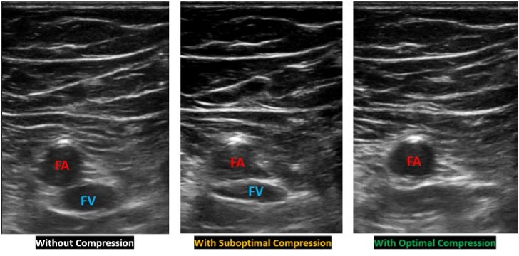

Common femoral vein (CFV) at saphenous junction + popliteal vein at popliteal fossa. Sensitivity ~95%, specificity ~98% for proximal DVT. Adequate for POCUS in most EM/ICU contexts.
| Finding | Normal | DVT |
|---|---|---|
| Compressibility | Vein walls fully touch with gentle probe pressure | Vein does not compress — thrombus or incompressible lumen |
| Lumen | Anechoic (black) | Hypoechoic or echogenic material within lumen |
| Color Doppler | Spontaneous flow, augments with calf compression | Absent flow; does not augment below obstruction |
2-point compression does not assess isolated calf (infrapopliteal) DVT. Calf DVT extends proximally in ~15–25% if untreated. For POCUS: negative 2PCS + high clinical suspicion = formal duplex or CT-PA depending on the clinical question.
